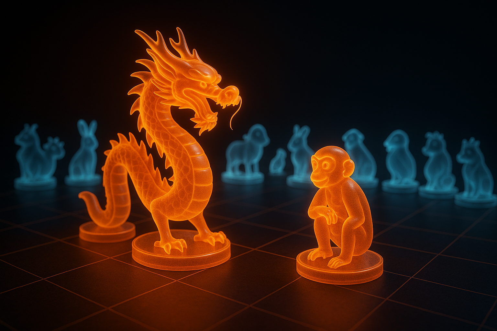

2025년 6월 16일 월요일: 오늘의 띠별 운세 (Today's Zodiac Horoscope)
Today's Zodiac Horoscope for Monday, June 16, 2025
2025년 6월 16일 월요일, 오늘의 띠별 운세입니다. 새로운 한 주를 시작하며 당신의 하루에 어떤 행운이 기다리고 있을지 미리 확인해 보세요. 쥐띠부터 돼지띠까지 각 띠별 금전운, 애정운, 건강운을 상세히 알려드립니다.
Here is the daily zodiac horoscope for Monday, June 16, 2025. As you start a new week, check out what luck awaits you today. We'll provide detailed information on money, love, and health fortunes for each zodiac sign from the Rat to the Pig.
🐭 쥐띠(Rat)
새로운 기회가 파도처럼 밀려오는 활기찬 하루입니다. 평소 관심 있던 분야나 미뤄왔던 계획에 과감히 도전해 보세요. 망설임 없는 도전은 기대 이상의 풍성한 성과로 이어질 것입니다. 긍정적인 마음과 밝은 미소로 주변 사람들을 대하면, 그들이 당신의 든든한 조력자가 되어 행운을 가져다줄 것입니다.
It's a vibrant day with new opportunities rolling in like waves. Bravely challenge yourself in areas you've been interested in or plans you've postponed. A challenge without hesitation will lead to more abundant results than expected. If you treat those around you with a positive mind and a bright smile, they will become your steadfast supporters and bring you good fortune.
금전운 (Money Luck)
생각지 못한 보너스나 부수입이 생기거나, 지인으로부터 유망한 투자 제안을 받을 수 있습니다. 하지만 들뜬 마음에 큰 지출을 하지는 마세요. 특히 계약이나 큰 금액이 오가는 결정은 신중하게 검토해야 합니다.
You might receive an unexpected bonus, side income, or a promising investment proposal from an acquaintance. However, don't make large expenditures in your excitement. Be sure to carefully review contracts or decisions involving large sums of money.
애정운 (Love Luck)
연인과의 관계가 한층 더 깊어지는 날입니다. 함께 새로운 취미를 시작하거나 미래에 대한 진지한 대화를 나누기 좋습니다. 솔로라면 망설이지 말고 마음에 드는 이성에게 먼저 다가가 보세요. 당신의 적극적인 모습이 새로운 인연의 시작을 알릴 것입니다.
The relationship with your partner will deepen. It's a good day to start a new hobby together or have a serious conversation about the future. If you're single, don't hesitate to approach someone you're interested in. Your proactive attitude will signal the beginning of a new relationship.
건강운 (Health Luck)
온몸에 활력이 넘치고 컨디션이 최상입니다. 이 좋은 에너지를 가벼운 산책이나 즐거운 운동으로 발산하며 기분 전환을 해보세요. 하루 종일 상쾌함을 유지할 수 있습니다.
You're full of vitality, and your condition is at its peak. Release this good energy through a light walk or enjoyable exercise for a change of pace. You'll be able to maintain a feeling of freshness all day long.
🐮 소띠(Ox)
묵묵히 걸어온 당신의 꾸준함이 드디어 빛을 발하는 날입니다. 그동안 노력해온 일들이 구체적인 결실을 보기 시작하며, 동료나 상사로부터 능력에 대한 인정을 받게 됩니다. 조급해하지 말고 지금의 성실한 페이스를 유지하는 것이 성공의 열쇠입니다.
This is a day when your quiet persistence finally shines. The efforts you've made will begin to bear concrete fruit, and you will be recognized for your abilities by colleagues or superiors. The key to success is to maintain your current diligent pace without becoming impatient.
금전운 (Money Luck)
안정적인 재물운이 따르므로 재정적으로 여유로운 하루를 보낼 수 있습니다. 다만, 눈길을 끄는 물건에 대한 충동구매 욕구를 잘 다스린다면 지갑이 더욱 두둑해질 것입니다.
Stable financial luck is with you, allowing for a financially comfortable day. However, if you can control the urge for impulse buys on eye-catching items, your wallet will become even thicker.
애정운 (Love Luck)
연인에게 "오늘따라 멋져 보인다" 혹은 "덕분에 힘이 난다"와 같은 따뜻한 말 한마디를 건네보세요. 사소한 오해가 눈 녹듯 풀리고 사랑이 더욱 단단하고 깊어질 것입니다.
Offer your partner a warm word like, "You look extra nice today," or "I feel stronger thanks to you." Minor misunderstandings will melt away like snow, and your love will become stronger and deeper.
건강운 (Health Luck)
업무나 학업으로 인해 정신적, 육체적 피로가 쌓이기 쉬우니 의식적으로 충분한 휴식을 취하는 것이 중요합니다. 좋아하는 음악을 듣거나 따뜻한 차를 마시며 스트레스를 관리하세요.
It's easy to accumulate mental and physical fatigue from work or studies, so it's important to consciously get enough rest. Manage your stress by listening to your favorite music or drinking a warm cup of tea.
🐯 호랑이띠(Tiger)
자신감이 하늘을 찌르고, 당신의 리더십을 마음껏 발휘하기 좋은 날입니다. 명확한 비전을 제시하며 주변 사람들을 이끌고 목표를 향해 나아간다면 놀라운 결과를 얻을 수 있습니다. 다만, 의욕이 앞선 나머지 대인관계에서 약간의 마찰이 있을 수 있으니, 다른 사람의 의견에도 귀를 기울이는 유연한 태도를 잊지 마세요.
Your confidence is soaring, and it's a great day to fully exercise your leadership. If you present a clear vision and lead those around you toward your goals, you can achieve amazing results. However, be mindful that your enthusiasm might lead to minor friction in interpersonal relationships, so don't forget to be flexible and listen to others' opinions.
금전운 (Money Luck)
활동적으로 움직이는 만큼 수입도 자연스럽게 늘어납니다. 하지만 '대박'을 노린 과감한 투자는 큰 손실로 이어질 수 있으니, 잘 모르는 분야에는 섣불리 뛰어들지 않도록 조심하세요.
Your income will naturally increase as you move about actively. But be cautious, as bold investments aiming for a "jackpot" could lead to significant losses. Avoid jumping into fields you're unfamiliar with.
애정운 (Love Luck)
당신의 당당하고 자신감 넘치는 매력이 이성의 마음을 강하게 사로잡습니다. 연인과는 평소보다 더 열정적이고 적극적인 애정 표현으로 뜨거운 하루를 보낼 수 있습니다.
Your confident and dignified charm will strongly capture the hearts of the opposite sex. You can have a hotter day than usual with your partner through more passionate and active expressions of affection.
건강운 (Health Luck)
에너지가 넘치지만, 그만큼 과로로 인한 건강 악화를 조심해야 합니다. 일하는 중간중간 틈틈이 스트레칭을 하거나 잠시 눈을 붙이며 휴식을 취해주세요.
You are full of energy, but you must be careful about health deterioration due to overwork. Take breaks to stretch or take a short nap in between work.
🐰 토끼띠(Rabbit)
혼자 힘으로 해결하기 어려운 문제에 부딪혔을 때, 주변 사람들의 도움으로 실마리를 찾을 수 있는 날입니다. 혼자 끙끙 앓기보다는 신뢰하는 친구나 선배에게 조언을 구하고 협력하는 자세가 필요합니다. 이를 통해 감정적인 안정과 평화로운 하루를 보낼 수 있습니다.
When you face a problem that is difficult to solve alone, today is the day you can find a solution with the help of those around you. Rather than worrying by yourself, you need to seek advice from trusted friends or seniors and cooperate. This will bring you emotional stability and a peaceful day.
금전운 (Money Luck)
갑작스러운 경조사나 수리비 등 예상치 못한 지출이 생길 수 있습니다. 미리 비상금을 확인하고 계획적인 소비를 통해 재정적인 어려움을 피하는 것이 중요합니다.
Unexpected expenses such as for family events or repairs may arise. It is important to check your emergency funds in advance and avoid financial difficulties through planned spending.
애정운 (Love Luck)
당신의 부드럽고 섬세한 배려가 얼어붙었던 상대의 마음을 녹이고 사랑을 키웁니다. 상대방의 작은 변화를 알아채고 다정하게 말을 건네거나, 그의 이야기에 진심으로 귀를 기울여주세요.
Your gentle and delicate consideration will melt a frozen heart and nurture love. Notice small changes in your partner, speak to them kindly, or genuinely listen to their stories.
건강운 (Health Luck)
전반적으로 무난한 건강 상태를 유지하지만, 신경이 예민해지면 소화 계통에 문제가 생길 수 있습니다. 맵고 짠 자극적인 음식은 피하고 편안한 마음을 유지하는 것이 좋습니다.
You'll maintain a generally stable health condition, but if you become nervous, you may experience digestive issues. It's best to avoid spicy and salty foods and maintain a relaxed state of mind.
🐲 용띠(Dragon)
당신의 잠재력이 최대한으로 발휘되며, 하늘을 나는 용처럼 거침없는 하루를 보낼 수 있습니다. 창의적인 아이디어가 샘솟고, 손대는 일마다 신기할 정도로 행운이 따릅니다. 자신감을 가지고 평소보다 대담하게 행동하면 상상 이상의 큰 성공을 거둘 수 있습니다.
Your potential will be fully unleashed, and you can have an unstoppable day like a dragon flying in the sky. Creative ideas will spring up, and luck will follow in everything you do. If you act more boldly than usual with confidence, you can achieve success beyond your imagination.
금전운 (Money Luck)
재물운이 크게 상승하는 날입니다. 적극적으로 재테크 정보를 찾아보거나, 장기적인 안목으로 가치 있는 곳에 투자해봐도 좋은 결과를 기대할 수 있습니다.
Financial luck is on a major upswing. You can expect good results by actively seeking out financial tech information or investing in valuable assets with a long-term perspective.
애정운 (Love Luck)
마치 영화처럼 드라마틱한 사랑이 찾아올 예감이 듭니다. 연인에게는 평범한 날을 특별하게 만들어 줄 서프라이즈 이벤트를 선물해보세요. 감동이 배가 될 것입니다.
There's a premonition of a dramatic love story, just like in a movie. Try gifting your partner a surprise event to make an ordinary day special. The emotional impact will be doubled.
건강운 (Health Luck)
활기차고 생동감 넘치는 하루를 보낼 수 있습니다. 다만, 좋은 기분에 취해 자신도 모르게 무리할 수 있으니, 적절한 휴식을 통해 컨디션 조절에 유의해야 합니다.
You can have a vibrant and lively day. However, be aware that you might overdo it without realizing it in your good mood, so be sure to manage your condition with adequate rest.
🐍 뱀띠(Snake)
날카로운 지혜와 깊은 통찰력이 그 어느 때보다 빛나는 하루입니다. 복잡하게 얽혀 있던 문제의 핵심을 꿰뚫어 보고, 가장 현명한 판단을 내릴 수 있습니다. 조용한 카페에서 혼자만의 시간을 가지며 명상을 하거나 앞으로의 계획을 정리하기에 더없이 좋은 날입니다.
It's a day when your sharp wisdom and deep insight shine brighter than ever. You can see through to the core of complexly tangled problems and make the wisest judgments. It's a perfect day to have some alone time in a quiet cafe to meditate or organize your future plans.
금전운 (Money Luck)
단기적인 이익에 흔들리기보다는, 장기적인 안목으로 안정적인 투자 계획을 세우기에 좋은 시기입니다. 전문가의 조언을 참고하여 미래를 위한 씨앗을 뿌려보세요.
It is a good time to establish a stable investment plan with a long-term perspective rather than being swayed by short-term gains. Try planting seeds for the future by referring to expert advice.
애정운 (Love Luck)
화려한 미사여구보다는 진솔한 대화를 통해 상대방과 깊은 정신적 교감을 나눌 수 있습니다. 서로의 가치관이나 꿈에 대해 이야기하며 마음을 확인해보세요.
You can have a deep spiritual connection with your partner through sincere conversation rather than fancy words. Confirm your feelings for each other by talking about your values and dreams.
건강운 (Health Luck)
그동안 쌓였던 정신적인 스트레스가 해소되고 마음의 평화를 찾을 수 있습니다. 자연 속을 걷거나 차분한 음악을 들으며 재충전의 시간을 갖는 것이 좋습니다.
The mental stress that has been building up will be relieved, and you can find peace of mind. It's good to recharge by walking in nature or listening to calm music.
🐴 말띠(Horse)
활동 범위가 넓어지고 새로운 사람과 문화를 경험하게 되는 역동적인 날입니다. 익숙한 환경에서 벗어나 밖으로 나가 사람들을 만나고 새로운 일에 도전해보세요. 당신의 뜨거운 열정이 주변에 긍정적인 에너지를 전파하며 좋은 기회를 끌어당길 것입니다.
It is a dynamic day where your sphere of activity expands, and you get to experience new people and cultures. Step out of your familiar environment to meet people and challenge yourself with new things. Your passionate energy will spread positive vibes and attract good opportunities.
금전운 (Money Luck)
발로 뛰고 열심히 움직이는 만큼 수입도 비례하여 늘어납니다. 하지만 들어온 돈을 무계획적으로 쓰기보다는, 현명하게 관리하고 저축하는 지혜가 필요합니다.
Your income will increase in proportion to how much you move and work. However, instead of spending the money you earn without a plan, you need the wisdom to manage and save it wisely.
애정운 (Love Luck)
평소 가보지 않았던 새로운 장소에서 운명적인 만남이 기다리고 있을지 모릅니다. 솔로라면 동호회나 관심 있던 분야의 모임에 적극적으로 참여해보세요.
A fateful encounter may be waiting for you in a new place you've never been before. If you're single, actively participate in clubs or meetings in fields you're interested in.
건강운 (Health Luck)
온몸에 에너지가 넘치지만, 들뜬 마음에 작은 사고나 부상을 당할 수 있으니 조심해야 합니다. 계단을 오르내리거나 길을 걸을 때 항상 주변을 잘 살피세요.
You are full of energy, but be careful of minor accidents or injuries due to excitement. Always look around carefully when going up and down stairs or walking on the street.
🐑 양띠(Sheep)
주변 사람들과의 따뜻한 인간관계 속에서 깊은 안정을 느끼는 하루입니다. 경쟁보다는 협력을 통해 더 큰 시너지를 낼 수 있으니, 팀 프로젝트나 공동 작업에서 당신의 능력을 발휘해보세요. 다른 사람을 기꺼이 돕는 일이 결국 자신에게 더 큰 복으로 돌아올 것입니다.
It's a day to feel deep stability within warm human relationships. You can create greater synergy through cooperation rather than competition, so try to display your abilities in team projects or joint work. Helping others will eventually return to you as a blessing.
금전운 (Money Luck)
신뢰할 수 있는 사람과 공동으로 투자하거나 동업을 시작하기에 좋은 날입니다. 혼자일 때보다 함께할 때 위험은 줄고 이익은 커지는 효과를 볼 수 있습니다.
It's a good day to start a joint investment or partnership with someone you trust. You can see the effect of reduced risk and increased profit when you are together rather than alone.
애정운 (Love Luck)
연인과 평화롭고 안정적인 관계를 유지하며 소소한 행복을 느낄 수 있습니다. 퇴근 후 가족과 함께 맛있는 저녁 식사를 하는 것도 좋은 선택입니다.
You maintain a peaceful and stable relationship with your partner and feel small joys. Having a delicious dinner with your family after work is also a good choice.
건강운 (Health Luck)
마음이 편안하니 몸도 덩달아 건강해지는 날입니다. 좋아하는 취미 생활에 몰두하거나 친구와 즐거운 수다를 떨며 삶의 즐거움을 더해보세요.
As your mind is at ease, your body becomes healthy as well. Immerse yourself in your favorite hobbies or add more joy to your life by having a pleasant chat with a friend.
🐵 원숭이띠(Monkey)
당신의 타고난 재치와 순발력이 돋보이는 날입니다. 예상치 못한 위기 상황에서도 뛰어난 임기응변으로 유연하게 대처하며 주변의 감탄을 자아냅니다. 번뜩이는 아이디어가 있다면 주저하지 말고 적극적으로 제안하여 당신의 가치를 증명해 보이세요.
It's a day when your natural wit and quick thinking stand out. You handle unexpected crisis situations with excellent improvisation, drawing admiration from those around you. If you have a brilliant idea, don't hesitate to propose it actively to prove your worth.
금전운 (Money Luck)
뜻밖의 행운로 재물이 들어올 수 있는 길일입니다. 잊고 있던 이벤트에 당첨되거나, 재미 삼아 사본 복권이 소소한 기쁨을 줄 수도 있습니다.
It's a lucky day where wealth can come from unexpected fortune. You might win a forgotten event prize, or a lottery ticket bought for fun could bring small joy.
애정운 (Love Luck)
당신의 유머 감각이 상대방의 마음을 즐겁게 하고, 두 사람의 관계에 활력을 불어넣습니다. 재치 있는 농담으로 웃음이 끊이지 않는 즐거운 데이트가 예상됩니다.
Your sense of humor will delight your partner and bring vitality to your relationship. A fun date with witty jokes and endless laughter is expected.
건강운 (Health Luck)
활동적인 만큼 안전사고에 각별히 유의해야 합니다. 특히 운전 시에는 평소보다 속도를 줄이고 전방을 잘 주시하는 등 더욱 조심할 필요가 있습니다.
As you are active, you need to be especially careful about safety accidents. Especially when driving, it is necessary to be more cautious by reducing speed and keeping a close eye on the road ahead.
🐷 돼지띠(Pig)
긍정적인 마음과 너그러운 태도가 온갖 행운을 불러오는 기분 좋은 날입니다. 주변 사람들과 즐겁게 어울리며 맛있는 음식을 나누기에 더없이 좋은 하루입니다. 길가에 핀 꽃 한 송이에도 감사하는 마음을 가지면, 우주가 당신에게 더 큰 복을 선물할 것입니다.
It's a pleasant day where a positive mind and a generous attitude bring all kinds of luck. It's a perfect day to have fun with people around you and share delicious food. If you have a grateful heart even for a single flower on the roadside, the universe will gift you with even greater blessings.
금전운 (Money Luck)
재물운이 아주 좋아, 기대하지 않았던 곳에서 돈이 들어오거나 지인에게 귀한 선물을 받을 수 있습니다. 주변에 감사의 마음을 표현하면 복이 배가 됩니다.
Financial luck is very good; you might receive money from an unexpected source or a valuable gift from an acquaintance. Expressing gratitude to those around you will double your blessings.
애정운 (Love Luck)
상대방의 작은 실수도 너그러운 마음으로 감싸주면 사랑이 더욱 커집니다. 받으려고 하기보다는 먼저 베푸는 하루를 보내보세요. 당신의 따뜻함에 상대방은 감동할 것입니다.
If you embrace your partner's small mistakes with a generous heart, your love will grow even bigger. Try to have a day of giving first rather than receiving. Your warmth will touch your partner.
건강운 (Health Luck)
즐거운 분위기에 휩쓸려 과식이나 과음을 하기 쉬우니 이 점은 조심해야 합니다. 아무리 즐거워도 자신의 주량과 소화 능력을 넘어 건강을 해치지 않도록 주의하세요.
Be careful as it's easy to overeat or drink too much in a festive atmosphere. No matter how much fun you're having, be careful not to harm your health by exceeding your limits.